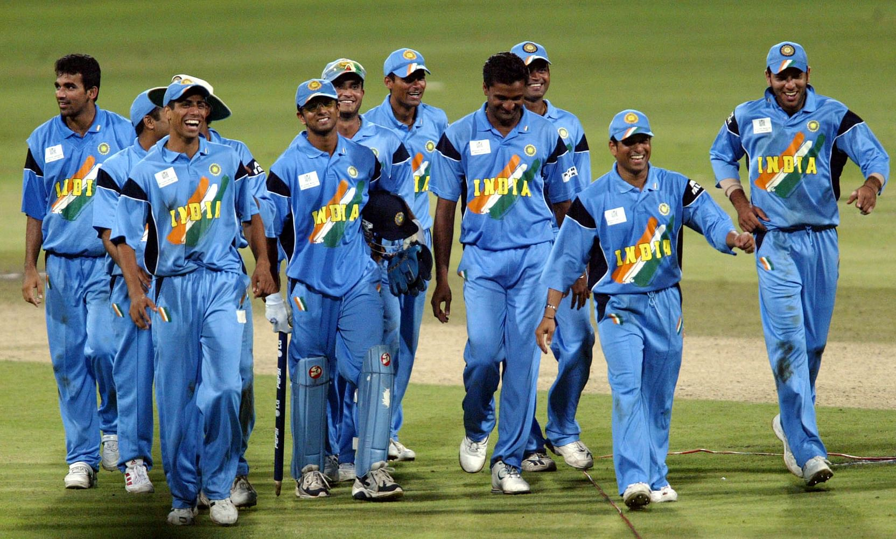
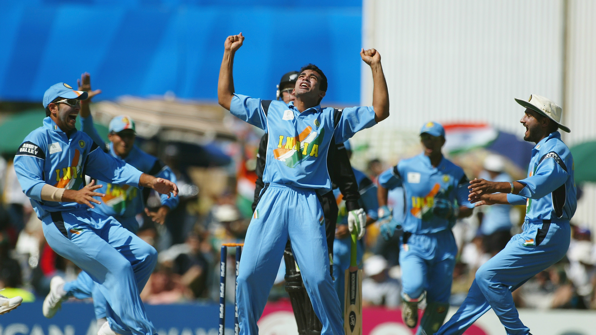
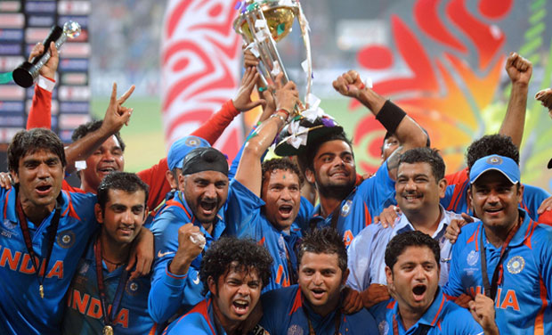
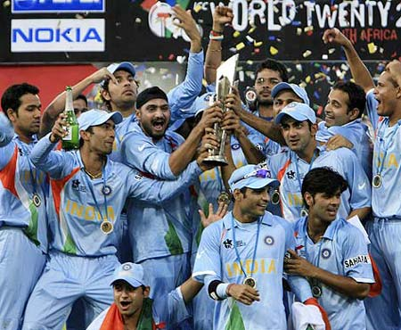
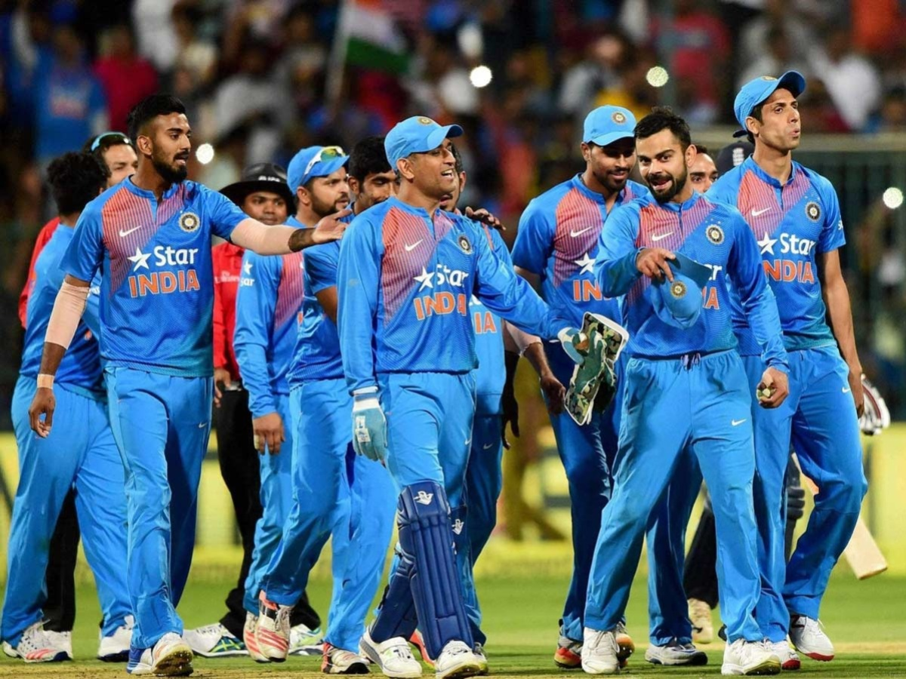

Cricket is a bat-and-ball game played between two teams of eleven players on a field at the center of which is a 20-meter pitch with a wicket at each end, each comprising two bails balanced on three stumps.Cricket is a bat-and-ball game played between two teams of eleven players on a field at the center of which is a 20-meter pitch with a wicket at each, each comprising.
|  | Cricket was introduced to India by European merchant sailors in the 18th century, and the first cricket club was established in 1792. India's national cricket team did not play its first Test match until 25 June 1932 at Lord's, becoming the sixth team to be granted test cricket status. In its first fifty years of international cricket, India was one of the weaker teams, winning only 35 of the first 196 Test matches it played. The team, however, gained strength in the 1970s with the emergence of players such as batsmen Gavaskar, Kapil Dev, and the Indian spin quartet. As of 1 May 2020, India is ranked third in Tests, second in ODIs and third in T20Is by the ICC. Virat Kohli is the current captain of the team across all formats, while the head coach is Ravi Shastri. |  |
|  |  |  |